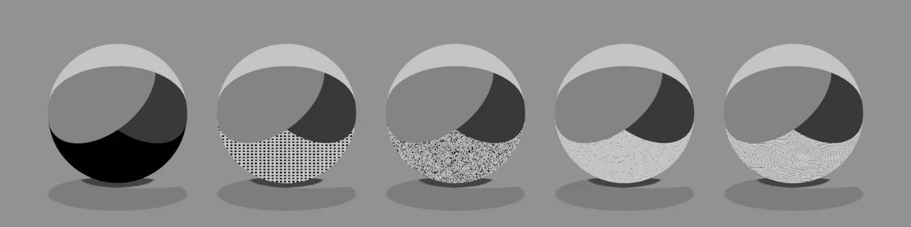
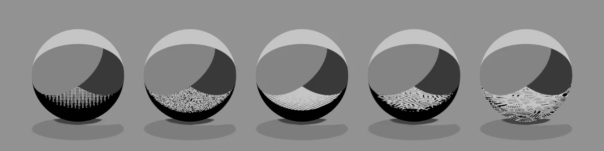
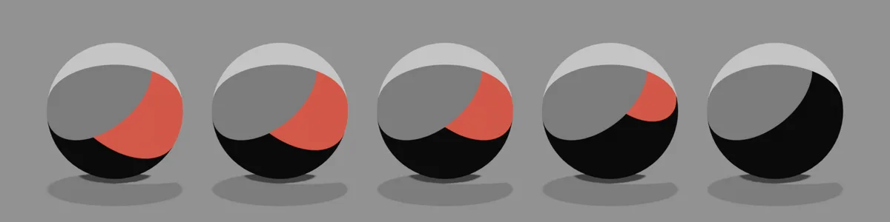
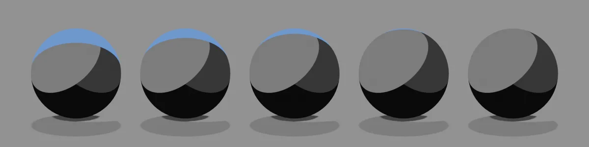
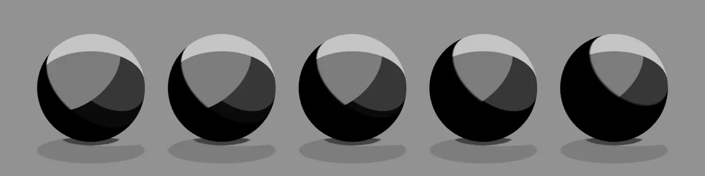
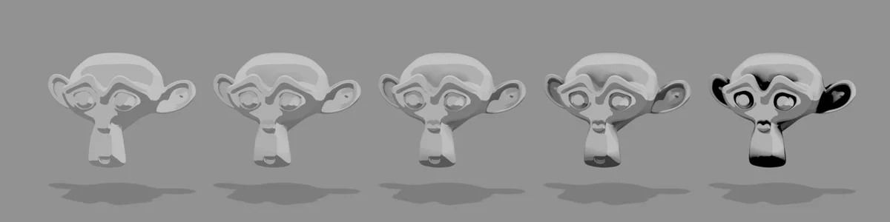
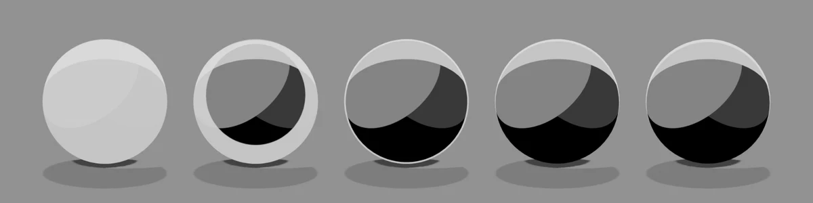
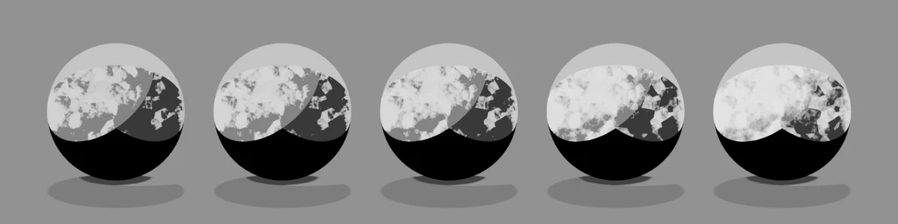

Manga Tone Shader

MTS · Material › Manga Tone Shader (Lite: …)
ライトの色の成分を読み分けて、キー（赤）・フィル（緑）・バック（青）の当たり方ごとに別のトーンを塗るシェーダーです。機能のチェックを入れると、その機能だけを含む軽量版のグループに自動で差し替わります。
概要図 Layer stack
下から順に重なって、1つの塗りになります。右上の札が重ね方（合成）です。
構成 Node tree
ライトはライトリンキングで照らす対象を決めています。キャラクターがライトグループの「照らす対象」に入っていないと、真っ黒になります。
パネルと数値 Inputs
5つの球（目・口・空）は、左から右へ値を変えたものです。画像の下に値を書いています。黄色い欄がその項目の既定値で、ほかの項目は既定値のままです。
Manga Tone Shader の項目一覧
| パネル | 項目 | 英語名 | 既定値 |
|---|---|---|---|
| 基本色 | ベーストーン | Base Tone |
カラー |
| 基本色 | キーライト オフセット | Key Light Offset |
3 |
| 基本色 | フィルライト オフセット | Fill Light Offset |
3 |
| 基本色 | バックライト オフセット | Back Light Offset |
1 |
| 影 | シャドウの不透明度 | Shadow Opacity |
1 |
| 影 | 明るさ | Brightness |
0.5 |
| 影 | コントラスト | Contrast |
1 |
| サブ輪郭線 | 不透明度 | Opacity |
0.5 |
| サブ輪郭線 | サイズ | Size |
0.5 |
| サブ輪郭線 | シャドウサイズ | Shadow Size |
0.2 |
| AO | 不透明度 | Opacity |
1 |
| AO | 強度 | Intensity |
1 |
| 光沢 | 不透明度 | Opacity |
0.5 |
| 光沢 | 明るさ | Brightness |
0.5 |
| 光沢 | コントラスト | Contrast |
1 |
| 光沢 | 広がり具合 | Spread |
0.1 |
| 光沢 | オフセットX | Offset X |
0 |
| 光沢 | オフセットZ | Offset Z |
0 |
| 異方性 | 不透明度 | Opacity |
0.5 |
| リムライト | 不透明度 | Opacity |
0.5 |
| リムライト | コントラスト | Contrast |
1 |
| リムライト | 幅 | Width |
0.014 |
| リムライト | オフセットX | Offset X |
0 |
| リムライト | オフセットZ | Offset Z |
0 |
| マット | 不透明度 | Opacity |
1 |
| マット | 明るさ | Brightness |
0.1 |
| マット | コントラストA | Contrast A |
0.5 |
| マット | コントラストB | Contrast B |
0.5 |
| 筆のタッチ | タッチの強さ | Stroke Strength |
0.3 |
| 筆のタッチ | タッチの細かさ | Stroke Scale |
3 |
| 筆のタッチ | タッチの伸び | Stroke Stretch |
4 |
| 筆のタッチ | タッチの角度 | Stroke Angle |
35 |
| 筆のタッチ | タッチの縁 | Stroke Edge |
0.5 |
| 色（色ゆらぎ・紙） | 色ゆらぎ | Color Variation |
0.057 |
| 色（色ゆらぎ・紙） | 明るさのゆらぎ | Value Variation |
0 |
| 色（色ゆらぎ・紙） | 紙 | Paper |
0.812 |
| 水彩 | にじみ | Bleed |
0.5 |
| 水彩 | にじみの細かさ | Bleed Scale |
12 |
| 水彩 | 縁のたまり | Edge Darkening |
0.5 |
| 水彩 | 粒状感 | Granulation |
0.3 |
| 水彩 | 淡さ | Wash |
0.15 |
| 透過 | アルファクリップ | Alpha Clip |
0.5 |
基本色 Base
Base Toneカラートーンのマテリアルどのライトも当たらない部分（球の下側）の色、または模様。色の欄の下に付属のトーン素材（Manga Tone Flat／Manga Tone Shaded）のマテリアルをドロップすると、その模様になります。
Manga Tone Flat（平らなトーン）：模様がそのまま一面に入ります。


Manga Tone Shaded（陰影付きのトーン）：ライトの当たり方で模様の濃さが変わり、明るい側ほど薄く、暗い側ほど濃くなります。


Key Light Offset既定 3比較 1 → 6.5キーライト（赤）の当たる範囲の境目。値を上げるほどキーのトーンの面が狭くなり、影側が広がります。画像はキートーンを赤にした場合。


Fill Light Offset既定 3比較 1 → 6.5フィルライト（緑）の面の境目。上げると中間調の面が狭くなり、暗い部分が増えます。画像はフィルトーンを緑にした場合。

Back Light Offset既定 1比較 1 → 6.5バックライト（青）のリムの幅。上げるほど後ろからの縁が細くなり、6.5 でほぼ消えます。画像はバックトーンを青にした場合。


影 Shadow
Shadow Opacity既定 1比較 0 → 1ほかのオブジェクトから落ちる影の濃さ。0 で影なし。

Brightness既定 0.5比較 0 → 1影の範囲を決めるしきい値。上げると影が広がります。コントラストが 1 だと変化がほとんど出ないため、画像はコントラスト 0.3 の場合。



サブ輪郭線 Sub Outline

Size既定 0.5比較 0 → 1サブ輪郭線の太さ。


AO AO
Opacity既定 1比較 0 → 1くぼみや奥まった部分（目のまわり・耳の内側・あごの下）に入る暗がりの濃さ。画像はくぼみの多いモデルで、本体が明るい色の場合。


Intensity既定 1比較 0 → 1暗がりが広がる範囲。上げるほどくぼみから外側へ広がります。

光沢 Gloss


Offset Z既定 0比較 -1 → 1ハイライトの位置を上下にずらします。

異方性 Anisotropy
Opacity既定 0.5比較 0 → 1髪の天使の輪のような、筋状のハイライト。UV の縦方向に沿って帯が出て、キーライトの当たる側で光ります。筋の色はトーンの色です（トーンが白の場合）。

異方性は UV 展開がきれいなメッシュ向け
筋の帯は UV 展開の縦方向に沿って出るため、UV 展開の向きが整っていることを前提にしています。髪に使うときは、「UV球」のプリミティブから形を作るのがおすすめです。UV球は最初から UV 展開の縦方向がそろっているので、頭の形に沿った天使の輪になります。 スカルプトやリメッシュで作った髪、自動の UV 展開（スマート UV 投影など）のままの髪では、UV 展開の向きがばらばらになり、帯が途切れたり斜めに走ったりします。
どちらも UV球から作った同じ形の髪に、同じ異方性の設定を入れています。左は UV 展開を細かく分けて、島ごとにばらばらの向きに回したもの（スマート UV 投影のあとに回転）、右は UV球の UV 展開をそのまま使ったものです。

リムライト Rim Light


Offset X既定 0比較 -1 → 1縁の出る向きを左右にずらします。マイナスで左側、プラスで右側の縁が太くなります（幅 0.2・不透明度 1 の場合）。

Offset Z既定 0比較 -1 → 1縁の出る向きを上下にずらします。マイナスで下側の縁が太くなり、-1 では球全体が覆われます。プラスでは下側の縁が細くなり、上側に寄ります（幅 0.2・不透明度 1 の場合）。


マット Matte
Opacity既定 1比較 0 → 1マットのトーン（質感の層）の濃さ。トーンには、カメラから見た法線で貼るマットキャップ画像をつなぎます（画像は結晶模様のマットキャップの場合。シェーダーは画像の明るさを使うので、色は白黒になります）。

Brightness既定 0.1比較 -0.1 → 0.2マットの層の明るさ。値の 10 倍が明るさとして足されるので、少しの変化で大きく変わります。マイナスで暗く、プラスで白っぽくなります。


Contrast A既定 0.5比較 0 → 1マットキャップ画像のガンマ（べき乗）。上げるほど暗い側が締まり、陰影が濃くなります。


筆のタッチ Brush Strokes
Stroke Strength既定 0.3比較 0 → 2明暗の境目を筆跡のように揺らす強さ。

Stroke Scale既定 3比較 1 → 8筆跡の大きさ。上げるほど細かいタッチになります。

Stroke Stretch既定 4比較 1 → 50筆跡の縦横比。上げると細長いストロークになります。


Stroke Edge既定 0.5比較 0 → 1ストロークの縁の硬さ。1 で筆跡が消えて元の境目に戻ります。

色（色ゆらぎ・紙） Paint Finish
Color Variation既定 0.057比較 0 → 1塗りの面ごとに色をばらつかせます。トーンが白黒（グレースケール）のときは、変化はほとんど見えません。

Value Variation既定 0比較 0 → 1面ごとに明るさをばらつかせます。

Paper既定 0.812比較 0 → 1紙の目（ざらつき）の強さ。画像は明るいトーンで「紙の細かさ 30・紙を画面に固定 0」の場合。

水彩 Watercolor
Bleed既定 0.5比較 0 → 1明暗の境目のにじみの量。

Bleed Scale既定 12比較 2 → 80にじみの模様の大きさ。上げるほど細かくなります。

Edge Darkening既定 0.5比較 0 → 1絵の具が縁にたまって濃くなる量。


Wash既定 0.15比較 0 → 1全体を水で薄めたように明るくします。